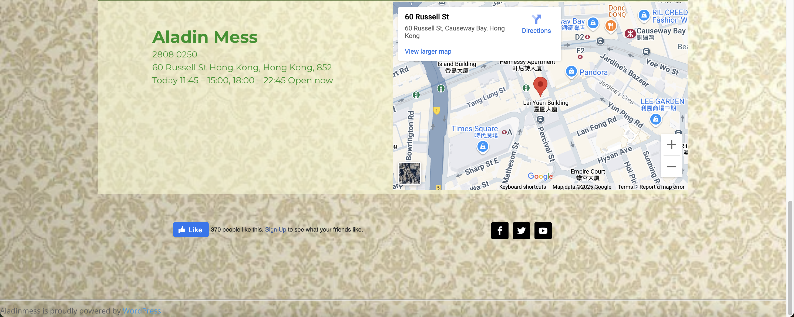
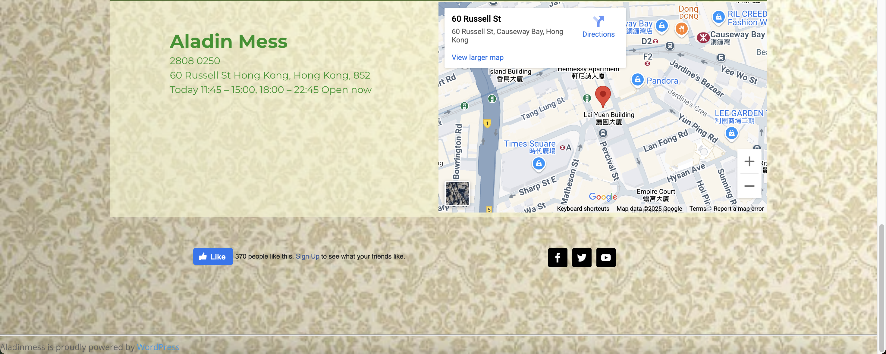
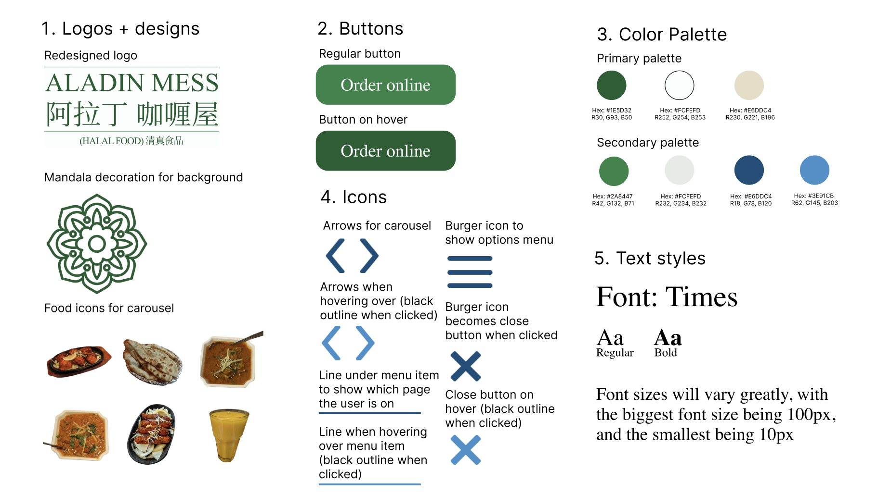
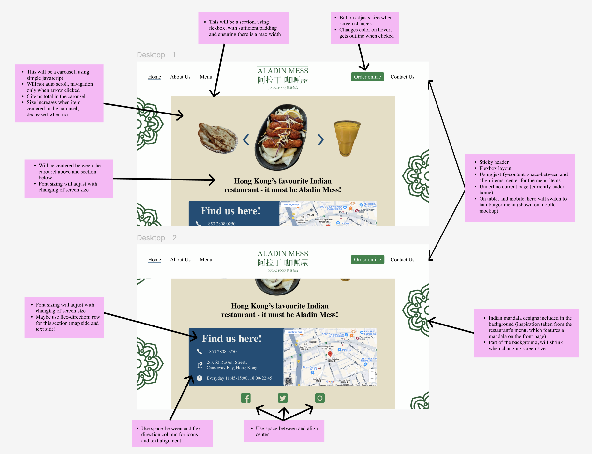
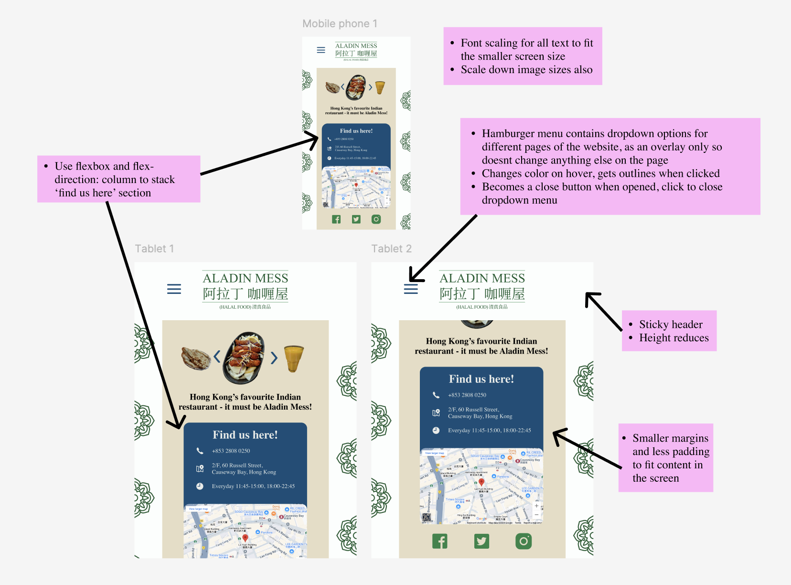

Introduction
For this project I will be redesigning an interface that I think could be improved. This will help me improve my skills related to:
- identifying issues with interfaces (usability, accessibility, efficiency, learnability, memorability)
- Improving my design skills, including developing a theme/vibe, color scheme, etc.
- Design a responsive website that can be used across different screen sizes
Details
The interface I have chosen is the “Home” page for one of my favourite restaurants in Hong Kong, an Indian restaurant called Aladin Mess. I am choosing to redesign this page because I love this restaurant and I think they should be more successful, and with their current website design, I do not think they are doing themselves justice. They are lacking in usability, accessibility, and overall design.
Below are some screenshots of their current website:


 

Identifying issues
The page has a range of issues, here are the various problems I have identified with this page:
- No clear visual hierarchy
- Low-resolution opening image that takes up almost a whole screen, doesn’t allow for efficient scrolling
- Cluttered home page
- Calls to action are not clear
- Long page, requires a lot of scrolling to gather information (home page should be simple and present facts for users to easily and quickly understand)
- No clear structure of the page
- Inconsistent spacing
- Inconsistent text sizing and color scheme
- Low contrast in some areas
- Visuals are not very engaging
- Lack of brand identity (e.g. the generic background)
- Outdated design
- Has some aspects of a restaurant “Home” page:
- Has some menu item images
- Has the location of the restaurant
- Has the contact information
- However, this information is not immediately found, users must search to find the important details about the restaurant.
- Missing information about delivery/pickup
- Links to Facebook, Twitter and YouTube, and “Like” on Facebook don't lead anywhere (lead to the current home page)
Accessibility issues
Aside from usability issues, the page also has several accessibility issues. This is very important because it means that users, especially people with disabilities, will have a harder time using this website. This leads to user frustration, or even users being turned away from visiting this site, and the restaurant at all because of it, which would impact Aladin Mess negatively (missed opportunities). In terms of accessibility issues, this is what I have identified:
- Errors detected by WAIVE:
- 15 low contrast errors (very low contrast)
- Images have no alt values or alt text
- Heading levels are skipped
- Unordered lists
- I agree with all the issues detected by WAIVE. Here are the issues I found when I browsed this website:
- The text is small
- The images are very grainy, and are hard to view/read
- Even the logo is grainy, which could deter potential customers who are visually impaired
- Various issues with colors and contrast, low contrast where there is important text
- Confusing layout (e.g. if using a screen reader, would be confusing), with no visual hierarchy
- Hovering over the “Get directions now” button changes the button color, which makes the text hard to read
Style guide
This is a style guide I created to help me develop my mockups. With this style guide I wanted to have a clear theme and color scheme that mirrors the vibe of the original website. This will make it much easier for my to make my mockups, as I can refer back to them when I am choosing what elemnts to add. This was really fun!
Mockups
Below are the mockups I created for my new website. I created these to help guide me when I would be making them as real websites, and I made them responsive in order to understand how I would need to adapt my elements for different screen sizes when writing my code later on.
Desktop mockup
Here are the key design choices I made in my mockup:
- Instead of having the wallpaper, which is grainy and low resolution, and doesn’t add anything to the brand identity, I will be making a custom wallpaper. I will be using an Indian mandala design, taking inspiration from the restaurant’s menu, which has a similar one on its front page. My hope is that this will be eye-catching and reflect the restaurant’s cultural identity, while also looking more sophisticated than the previous background
- I will be using food icons in a carousel, as the website previously had a carousel, but this one will be cleaner and easier to use (as the arrows only appear on hover of the image, and even then are not that visible in the original version)
- I adapted the color scheme to keep to the original theme slightly (with the green colors and beige background)
- Re-did the logo to make it readable
- Using a embedded map to show the location of the restaurant - I think this restaurant is not as popular as it could be because the location is hard to find, so I hope to alleviate this using an interactive map
Tablet and mobile mockup
Critique Notes:
After receiving critique from my peers in a studio session, I was able to use their notes to help improve my final product. Here were the notes and suggestions I received from my peers:
Critiques:
- On the iPhone the eyes go to the blue part
- The white background is too stark
- Food slideshow is a bit cramped (maybe just do a swipe)
- Find us here section is too big
Suggestions:
- On hover of the food, the name of the food could pop up
- Use a more ‘Indian’ typeface instead of Times
- Make the ‘find us here’ on the phone thinner
- Add more of the vibe of the restaurant back in
- Implement the green colors more
- Pair slideshow with an action (e.g. order it or go to menu)
- Add a button to change the language to Cantonese
- Increase the border radius of the beige main section
- Scale the rounding of the blue part
Although I was not able to use all of their suggestions, and I also had some differing opinions from my peers — which is very normal as design is extremely subjective — I implemented several changes, based off my critique received as well as my own mind changing.
The changes include:
- Added the food names on hover over the items in the carousel
- Moved the arrows from the food carousel to the outer edges of the food items
- Added pagination to the carousel, and made the carousel draggable
- This is more self-explanatory for users to use
- Changing the food slideshow to only show 1 item per slide on the smaller screen sizes
- This made it less cramped, and ensures the users could still see the image
- Removing the mandala background on the smallest screens
- This made the layout much less cramped
- Made the ‘Find us here’ section thinner on the smaller screens
- Changed the font to Trebuchet MS
- This adheres to the vibe of the restaurant more than the font I originally chose
- Added a button to change the language to Chinese/Cantonese
- This is important because the restaurant is in Hong Kong, and the majority of people there speak/read Chinese
- Changed the color of the burger menu, and implemented a green dropdown
- This helps add in more of the green color, and sticks to the theme better
- Increased the border radius of the beige main section
- Changed the color of the arrows on click
- Better accessibility
- Added a changing border color for the ‘order online’ and language changing button
- Better accessibility
Without further ado, here is the link to my redesigned website!
Final outcomes
I’m really proud of how this project turned out. I believe the redesigned website successfully preserves the original personality and purpose of the site, while offering a much cleaner, more accessible, and visually appealing experience. The final product is both usable and accessible, and has been developed to work well across various screen sizes.
One of the biggest insights I had during this redesign was that it is surprisingly difficult to maintain the original “vibe” of a website during a redesign - especially when that vibe comes from things that aren't necessarily accessible or visually clean - like Aladin Mess' original logo. Balancing the aesthetics, brand personality, and usability was an exciting but difficult challenge.
I also learned a lot about the importance of accessibility - from color contrast and screen reader compatibility to visual hierarchy and consistent navigation. These changes were not only technical fixes, they improve the user experience for everyone, especially people struggling with issues such as visual impairement, etc.
I also had a lot of fun with this project, especially because I love this restaurant so much!
Key Outcomes:
- Redesigned site adapts well to different screen sizes and devices
- Font sizes, responsive layouts, and language options tested across breakpoints
- Usability issues (Part 1) addressed with clearer hierarchy, simplified navigation, and better structure
- Accessibility issues (Part 1) addressed with improved color contrast, alt text, readable typefaces, and accessible buttons
- Final site matches high-fidelity mockups and is ready for use
- Provides a modernized and sleek look without losing the personality of the original site
What I Learned:
- Accessibility is not just an added bonus to a website - it influences how people feel when they use a website
- Designing for responsiveness is very difficult, and requires a lot of planning beforehand, as well as small tweaks during coding
- Small visual tweaks (like font types, shades of colors, and outlines) can make a big difference to the look and feel of a web page